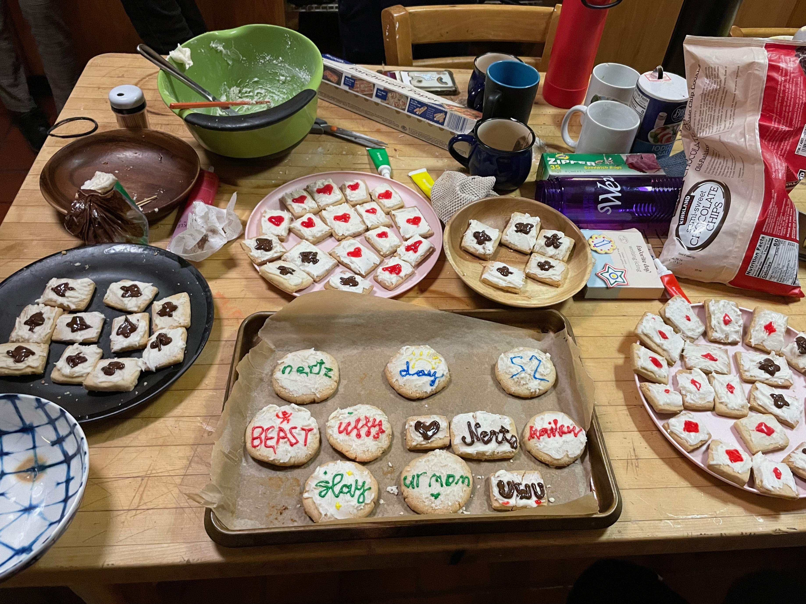

Nertz
Nertz is a game of competitive speed solitaire, first introduced on Beast in the fall of 2022.
It has since become an addiction a hall tradition to play Nertz every day!
Most consecutive days of Nertz played: 80 days
Most games played in one day: 75 games
Fastest game of Nertz played: 7.75 seconds
Number of people who still can't shuffle: 0 people
